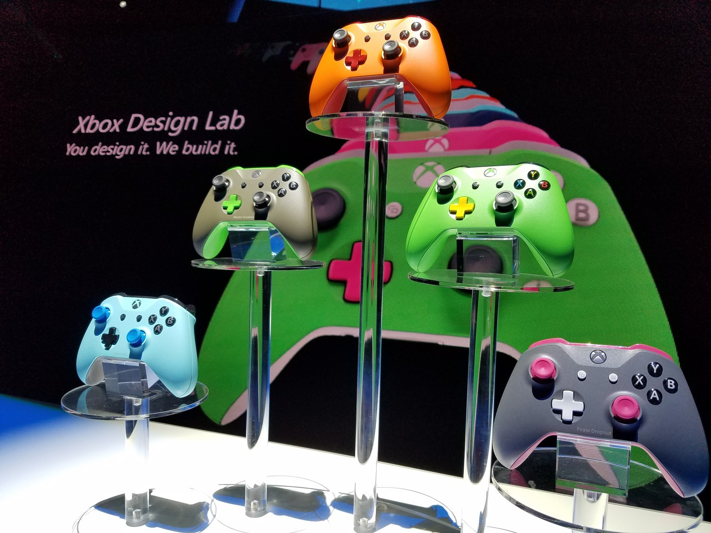
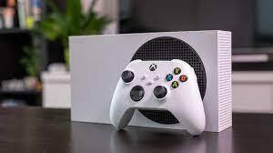

O Xbox é sem dúvida o melhor lugar para jogar, principalmente quando colocamos em questão o Xbox Game Pass.
O serviço é uma das formas mais acessíveis de jogar uma gigante biblioteca de títulos e mesmo no Brasil onde tudo costuma ser muito caro, tem um preço acessível.
Porém, alguns serviços e iniciativas do Xbox ainda não pintaram em terras tupiniquins, e sem dúvida fariam da marca algo ainda mais relevante.
A variedade de designs para os controles de Xbox são um dos diferenciais da plataforma, mas já imaginou se você pudesse criar seus próprios visuais?
Este serviço já existe, é o Xbox Design Lab, mas infelizmente ainda não está disponível no Brasil até o momento
O serviço oferece um site no qual você pode customizar todo o visual do controle e realizar a compra do mesmo, o que é algo que dá ainda mais personalidade para seus acessórios.
É evidente que se o serviço fosse oferecido por aqui o valor dos controles seria alto, mas de qualquer forma os Xbox Wirelles Controllers já têm um custo alto por aqui.
Em diversas regiões, a Microsoft oferece um serviço que comercializa peças de reposição para os controles de Xbox, o que incentiva os usuários a realizar os reparos.
iniciativa é mais uma que não está disponível no Brasil, e faz falta, visto que o custo de um controle original por aqui é bem alto, fazendo do reparo algo essencial para o mercado.
Antes que você pense qualquer coisa: sim, o Xbox All Acess está disponível no Brasil por meio de uma parceria com uma instituição financeira; mas é bem diferente do serviço oferecido lá fora.
Primeiramente no Brasil, os interessados só podem adquirir o Xbox Series S, enquanto em outros mercados o serviço também oferece o Xbox Series X.
O valor também acaba não sendo assim tão interessante, visto que com parcelas de cerca de R$ 180 em 21 vezes, você acaba tendo um custo de quase dois consoles comparando o valor do mesmo no varejo online.
A maior feira de games da América Latina, BGS, não vai contar com a presença do Xbox na sua próxima edição.
Em meio a um ano onde tivemos e teremos lançamentos como Hi-Fi Rush, Starfield e Forza Motorsport, é de se lamentar que a Microsoft não tenha um espaço na feira que acontece em São Paulo.
Fãs da plataforma que estarão presentes no evento terão que se contentar com conteúdo de parceiras, e torcer para que em outras oportunidades o Xbox tenha seu espaço no evento.
Notícia original: https://www.centralxbox.com.br/2023/08/18/xbox-no-brasil-ta-bom-mas-poderia-ser-ainda-melhor/